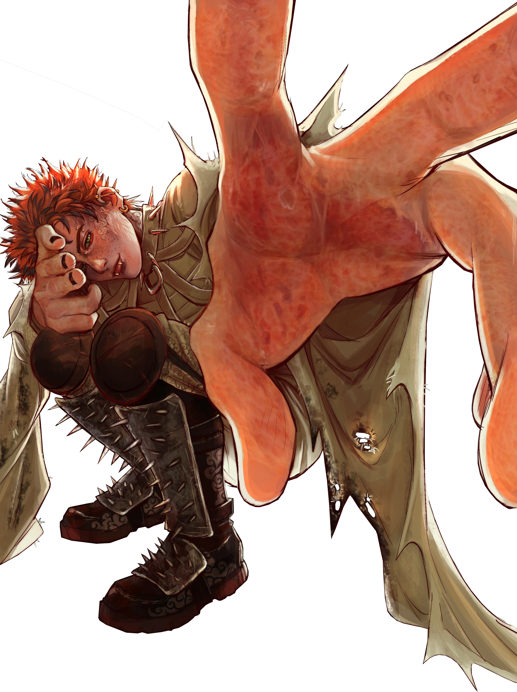

Quem é esse maluco?
Franco foi o guitarrista dos PSIKOLERA, uma banda ocultista participante do Hexatombe. Um jovem piromaniaco de aproximadamente 1,75m de altura, tendo um físico magro com cabelos ruivos espetados, diversas queimaduras visíveis pelo seu corpo e tatuagens em um estilo tribal em sua panturrilha. Possuia uma guitarra com uma pintura de chamas que foi modificada para comportar um lança chamas saindo de sua parte inferior.
Fique à vontade para explorar o site, testar o botão de mudar as cores e interagir com as minhas variantes.